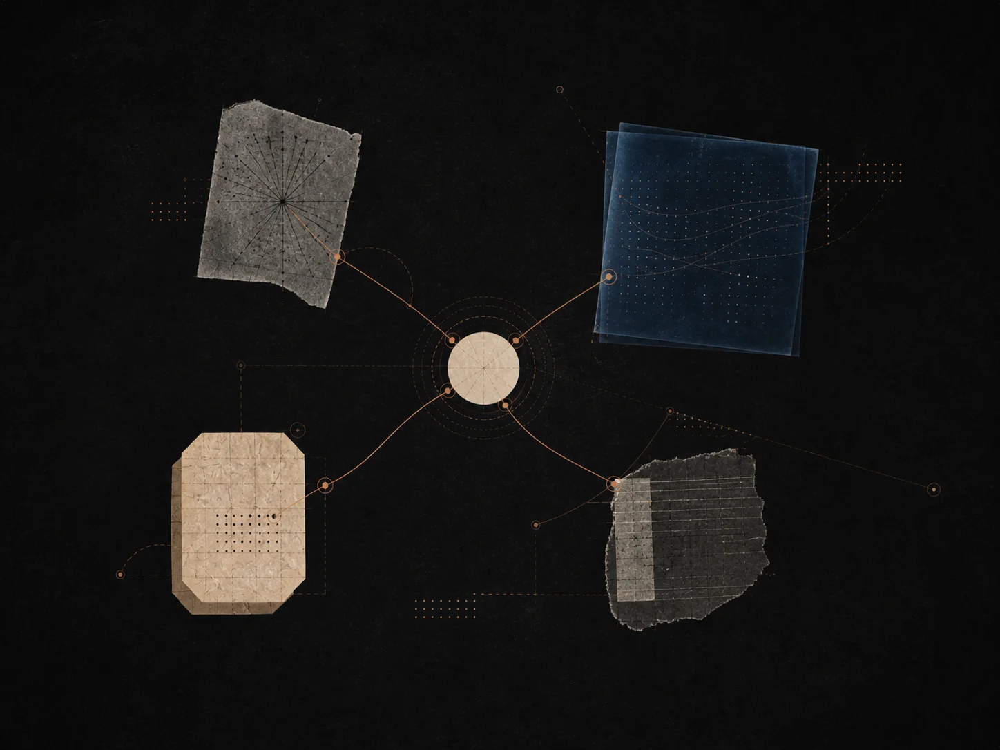

从这里开始
免费
不绑卡即可开始提问。
$0
- Beagle 起始额度
- 引导式课程
- 自带 API 密钥
定价
每个套餐都包含苏格拉底式教学、流式响应、LaTeX、模型选择，以及内置的 Beagle 导师。先免费开始，再逐步加深练习。

每个套餐都包含什么
每个 Socrates 账户都附带同样的编辑器、同样的苏格拉底式教学风格、同样的回忆系统，以及同样的知识地图。套餐的区别在于你能用多少，而不在于它怎么教。
教学
导师先提问，再回答。回答边读边流式呈现，LaTeX、代码与图示都内联渲染，让你停留在想法里。
回忆
从任意会话里存下一个瞬间，导师会在合适的时间间隔把它带回来。你的回忆记录只对你的账户可见。
模型
快速的模型用于快速澄清，更深的模型用于长线程。如果你愿意，也可以从 API 密钥页带上自己的 provider key。
隐私
会话只对你自己私密。我们不会用你的对话来训练。你可以随时从账户页导出或删除任意会话。
如何选择套餐
大多数人不需要想太久。如果你能回答下面三个问题，剩下的就只是个数字。
问题一
一周一两次？从免费或 Riemann 开始。每天跨两三门学科学习？Descartes 正合适。全职学习或研究？选 Euclid。
问题二
如果多数会话短而聚焦，较低档就够用。如果你习惯一次坐下来走完整个章节，你会需要更多 token 余量。
问题三
考试模式、网络搜索和最高额度都在 Descartes 与 Euclid 中。如果这些对你学习的方式很重要，就从一开始就为它们规划。
关于定价
取消
可以。从账户页取消，套餐会保留到当前周期结束。没有挽留电话，也没有截止陷阱。
切换套餐
你可以从账户页升级或降级。升级立即生效，我们会按比例退还上一套餐未使用的部分。
退款
如果你在首次付费套餐的十四天内取消，写信给我们，我们会退还该周期。我们宁愿你带着好印象离开，也不愿留一笔账户余额。
学生
有。用你的学术邮箱发一封附上课名和学校的留言到 help@addtech.site，我们会发送折扣码。
发票
支持。从账户页添加账单信息，每笔扣款都会附带可下载的发票。欧盟客户在需要时会按 VAT 计费。
团队
暂时没有自助式团队套餐。我们按团队与课题组、班级和小公司合作。用联系页开启这场对话。